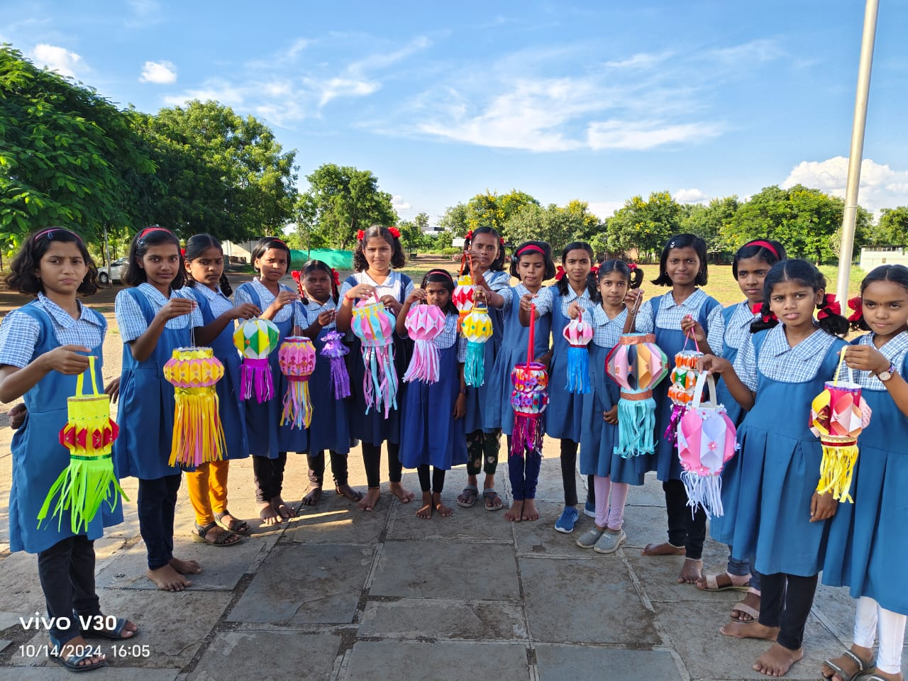
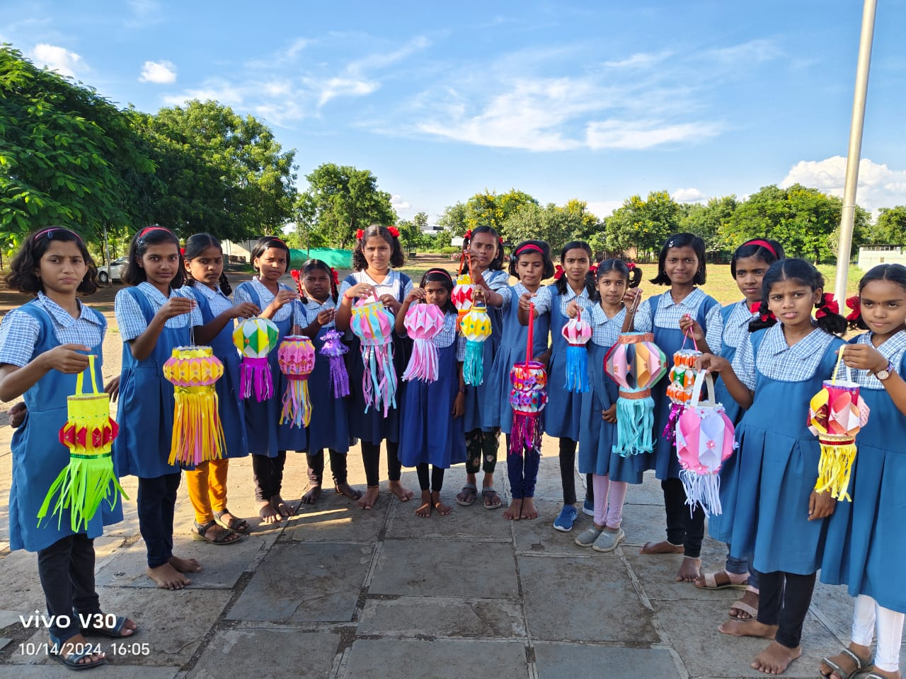
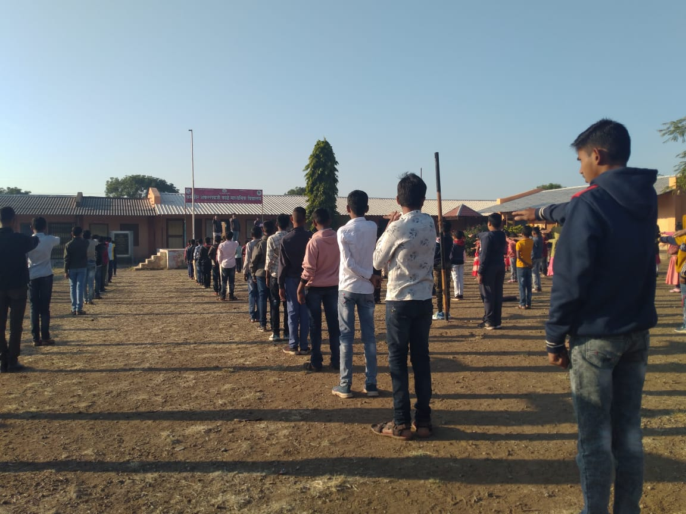
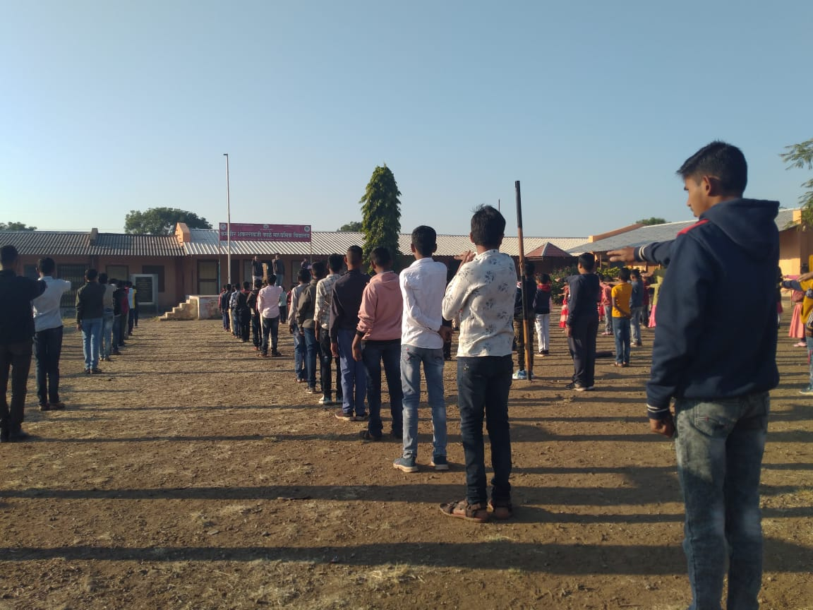

रयत शिक्षण संस्थेचे,
कर्मवीर शंकररावजी काळे माध्यमिक विद्यालय, करंजी बु.

रयत शिक्षण संस्थेचे,
रयत शिक्षण संस्थेच्या माध्यमिक शाळेतील विद्यार्थ्यांसाठी उत्कृष्ट सुविधांची व प्रगतीशील शालेय वातावरणाची सोय करण्यात आली आहे. आमच्या शाळेत प्रशस्त व सुसज्ज वर्गखोल्या, अत्याधुनिक संगणक लॅब, आणि विद्यार्थ्यांच्या खेळाच्या आवडीला प्रोत्साहन देण्यासाठी विस्तृत क्रीडांगण व उत्कृष्ट क्रीडा सुविधा उपलब्ध आहेत. शाळेने विद्यार्थ्यांच्या सर्वांगीण विकासासाठी विविध सांस्कृतिक, शैक्षणिक, तसेच शारीरिक उपक्रमांचे आयोजन केले जाते. विद्यार्थ्यांना शाळेत सुसंस्कृत व नैतिक शिक्षण देऊन त्यांना समाजाच्या विकासासाठी जबाबदार नागरिक म्हणून घडवणे हे शाळेचे मुख्य ध्येय आहे. शाळेतील शिक्षण केवळ शैक्षणिक ज्ञानावर आधारित नसून, स्वावलंबन, श्रमप्रतिष्ठा आणि समाजसेवेचे महत्त्व देखील विद्यार्थ्यांमध्ये रुजवले जाते. यासाठी विविध कार्यशाळा, संवाद सत्रे आणि प्रेरणादायक उपक्रम राबवले जातात. विद्यार्थ्यांना आपल्या कल्पकतेला वाव देण्यासाठी शाळेतील सर्व सुविधा त्यांच्यासाठी खुल्या आहेत, जेणेकरून ते त्यांच्या शिक्षणाच्या प्रवासात उत्कृष्टतेकडे वळतील. शाळेचा दृष्टिकोन शिक्षणाबरोबरच विद्यार्थ्यांमध्ये आदर्श व्यक्तिमत्त्व निर्माण करण्याचा आहे, जे समाजातील सकारात्मक बदलांसाठी पुढाकार घेतील.

 



 



आमच्या शाळेतील शिक्षक आणि कर्मचारी विद्यार्थ्यांसोबत सुसंवादी आणि सहकार्यपूर्ण नाते राखतात, जे शालेय प्रगतीसाठी महत्त्वपूर्ण आहे.
परसबगामध्ये विद्यार्थ्यांसाठी घरगुती लागवडीसाठी फळझाडे, भाज्या व औषधी वनस्पतींची देखभाल व संवर्धन करण्याची सुविधा आहे.
आमचा खेळाचा मैदान आधुनिक सुविधाांनी सुसज्ज आहे ज्यामुळे शारीरिक विकास आणि मजा सुनिश्चित केली जाते..
विद्यार्थ्यांना त्यांच्या कलात्मक आणि संगीतात्मक कौशल्यांचा अन्वेषण आणि विकास करण्यासाठी एक सर्जनशील जागा..

आमची संगणक प्रयोगशाळा डिजिटल शिक्षणाला समर्थन देण्यासाठी अत्याधुनिक तंत्रज्ञानाने सुसज्ज आहे.
विद्यार्थ्यांसाठी शारीरिक आणि मानसिक विकासासाठी पोषणतत्त्वांनी भरपूर आणि संतुलित आहार.

स्थानिक स्कूल कमिटी चेअरमन
मा. कारभारी मारुती पा. आगवन यांनी शाळेच्या स्थानिक कमिटीचे अध्यक्ष म्हणून शाळेच्या सर्वांगीण विकासात महत्त्वपूर्ण योगदान दिले आहे. त्यांच्या अथक परिश्रमातून आणि ठोस नियोजनातून या विद्यालयाची स्थापना झाली आहे. त्यांच्या कर्तृत्वाला गावकऱ्यांचा भरभरून पाठिंबा लाभला, ज्यामुळे या विद्यालयाच्या उभारणीत सामूहिक सहभागाचे सुंदर उदाहरण घडले. शिक्षण क्षेत्रातील त्यांच्या दूरदृष्टीने शाळेच्या भौतिक तसेच तांत्रिक सुविधांचा स्तर उंचावला आहे, ज्यामुळे विद्यार्थ्यांना दर्जेदार शिक्षणाची संधी मिळत आहे. मा. आगवन यांची शैक्षणिक धोरणे प्रगत आणि समर्पक आहेत. त्यांनी गुणवत्तापूर्ण शिक्षणासाठी नवनवीन उपक्रम आणि तंत्रज्ञानाचा समावेश करून शाळेला आधुनिक शैक्षणिक प्रणालीशी जोडले आहे. त्यांच्या प्रभावी नेतृत्वाखाली शाळेने शैक्षणिक गुणवत्ता वाढवण्याबरोबरच विद्यार्थ्यांमध्ये स्वावलंबन, आत्मविश्वास आणि प्रगतीसाठीची मानसिकता विकसित केली आहे. शैक्षणिक क्षेत्रात त्यांची कामगिरी केवळ स्थानिक पातळीवरच नाही, तर व्यापक सामाजिक बदलांसाठी प्रेरणादायी ठरली आहे. शाळेच्या माध्यमातून त्यांनी ग्रामीण भागातील विद्यार्थ्यांसाठी शैक्षणिक दारं उघडून सामाजिक प्रगतीला चालना दिली आहे. त्यांच्या शैक्षणिक आणि सामाजिक कार्यातून एका सक्षम आणि प्रगल्भ समाजाच्या उभारणीसाठी त्यांनी भक्कम पाया घातला आहे. अशा या दूरदर्शी नेत्याच्या योगदानामुळे गावाच्या शिक्षणाच्या पटलावर प्रगतीचा नवा अध्याय लिहिला गेला आहे, जो भविष्यातील शिक्षण क्षेत्रासाठी एक आदर्श ठरेल.
सदस्य स्थानिक स्कूलकमिटी
शालेय समितीत त्यांचा प्रभावशाली योगदान आहे, ज्यामध्ये शाळेच्या धोरण निर्धारणात निर्णायक भूमिका निभावून शाळेच्या सर्वांगीण विकासासाठी सुधारणा आणि मार्गदर्शन करण्यात ते महत्त्वाची भूमिका बजावत आहेत.
सदस्य स्थानिक स्कूलकमिटी
स्थानिक स्कूल कमिटीच्या सदस्य म्हणून मा. सांडूभाई शेरखा पठाण यांचे शालेय व्यवस्थापन आणि विद्यार्थ्यांच्या कल्याणासाठी महत्त्वपूर्ण योगदान आहे. त्यांच्या मार्गदर्शनामुळे शाळेतील उपक्रम आणि धोरणांमध्ये सुधारणा झाली आहे.
आमच्या आदरणीय मुख्याध्यापकांकडून संदेश:.

"माझ्या विद्यालयातील प्रत्येक विद्यार्थी हा रयत शिक्षण संस्थेची अमूल्य संपत्ती आहे. त्यांना केवळ ज्ञानप्राप्तीपर्यंत मर्यादित न ठेवता, एक आदर्श नागरिक, सशक्त व्यक्तिमत्त्व आणि समाजाच्या प्रगतीसाठी कार्यशील सदस्य घडवणे हा आमचा मुख्य उद्देश आहे. शिक्षण ही केवळ पुस्तकी ज्ञान प्राप्तीची प्रक्रिया नसून, ती विद्यार्थ्यांच्या व्यक्तिमत्त्वाचा सर्वांगीण विकास घडवण्याचे प्रभावी साधन आहे.
आम्ही अशा प्रकारचे शिक्षण देण्याचा संकल्प केला आहे, जे त्यांच्या बौद्धिक, नैतिक, आणि व्यावहारिक क्षमतेचा विकास घडवून त्यांना जीवनाच्या प्रत्येक क्षेत्रात सक्षम बनवेल. रयत शिक्षण संस्थेचा अभिमान आहे की ती विद्यार्थ्यांना गुणवत्तापूर्ण शिक्षणाच्या माध्यमातून त्यांचे उज्ज्वल भविष्य घडवण्याच्या कार्यात सदैव अग्रस्थानी आहे."
श्री दिनकर महिपत माळी,बीए बीएड
- प्राचार्य, कर्मवीर शंकररावजी काळे माध्यमिक विद्यालय, करंजी बु.
बी एस्सी बी एड
उपशिक्षक

बीए बीएड
उपशिक्षक
ए एम ,जी डी आर्ट
उपशिक्षक
महाराष्ट्र शासन राज्य आदर्श शिक्षक पुरस्कार प्राप्त
बीए डीएड
उपशिक्षक
बीएससी बीएड
उपशिक्षक
एम ए बी एड
उपशिक्षक
एम ए बी एड (सेट)
उपशिक्षक

डी एड
उपशिक्षक
बी ए
वरिष्ठ लिपिक
एस एस सी
शिपाई
शिक्षणाचे आधुनिक भगीरथ
(२२ सप्टेंबर १८८७ - ९ मे १९५९)
कर्मवीर भाऊराव पाटील हे शिक्षणाच्या क्षेत्रात आदर्श नेते होते. त्यांचा दृढ नेतृत्व आणि समाजासाठी समर्पण हे अत्यंत प्रेरणादायी आहे. भाऊराव पाटील यांनी आपल्या कार्यातून शिक्षणाचे महत्व जनमानसात रुजवले आणि ग्रामीण भागातील शिक्षणाच्या पातळीला एक नवा आकार दिला.
त्यांनी शाळा आणि महाविद्यालयांच्या स्थापनेसाठी अथक परिश्रम घेतले आणि शिक्षणाच्या क्षेत्रात नव्या विचारांची बीजे रोवली. "शिक्षण हेच समाज परिवर्तनाचे सर्वोत्तम साधन आहे" हा त्यांचा विश्वास होता, ज्यामुळे त्यांनी सामाजिक समानतेसाठी शिक्षणाचा वापर केला. त्यांच्या कार्यामुळे अनेक विद्यार्थ्यांना योग्य शिक्षण मिळवून त्यांचे जीवन परिवर्तन झाले.
त्यांच्या कार्याने आपल्याला असे शिकवले की, एक आदर्श नेता समाजाच्या विकासासाठी आणि शिक्षणाच्या प्रसारासाठी आपल्या कर्तव्याप्रती समर्पित असावा लागतो.
कर्मवीर भाऊराव पाटील यांनी शिक्षणाची दिशा निश्चित केली आणि ग्रामीण भागातील मुलांना शिक्षणाची संधी दिली. त्यांचा दृढ विश्वास होता की शिक्षणानेच समाजात समानता आणि न्याय प्रस्थापित होऊ शकतो. त्यांनी आपल्या प्रयत्नांनी सुमारे 450 शाळा आणि महाविद्यालये स्थापन केली, ज्यामुळे लाखो विद्यार्थ्यांना शिक्षण मिळाले.
त्यांचे कार्य आजही प्रेरणादायक आहे, कारण त्यांनी आपले संपूर्ण जीवन समाजाच्या सर्वांगीण विकासासाठी समर्पित केले. त्यांच्या कष्टामुळे शिक्षणाच्या क्षेत्रात क्रांतिकारी बदल घडले आणि ग्रामीण भारतातील मुलांनाही उच्च शिक्षण मिळवण्याची संधी मिळाली.
शिक्षण व सहकार क्षेत्रातील प्रणेते
(६ एप्रिल १९२१ - ५ नोव्हेंबर २०१२)
स्व.खासदार कर्मवीर शंकरराव काळे यांचा जन्म ६ एप्रिल १९२१ रोजी कोपरगाव तालुक्यातील माहेगाव देशमुख या खेड्यात शेतकरी कुटुंबात झाला. त्यांच्या आई-वडिलांनी शेती करून संसार चालवला. वडील देवरामबाबा काळे शिक्षणाचे महत्त्व ओळखून मुलांना शिकवण्यासाठी कायम प्रयत्नशील होते. शंकरराव साहेब बी.एस्सी. आणि बी.ई. (सिव्हिल) झाले, आणि ते त्यावेळचे एकमेव उच्चशिक्षित होते.
कर्मवीर भाऊराव पाटील यांना ज्यांनी प्रत्यक्ष काम करताना बघितलं त्या सुदैवी लोकांपैकी स्व. काळे साहेब हे एक होत. कर्मवीरांसोबत साहेबांचा संपर्क १९४८ च्या सुमारास आला. शिक्षण प्रसारासाठी अहोरात्र झटणाऱ्या या ऋषीतुल्य व्यक्तिमत्त्वाने साहेब भारावले होते. कारखाना सुरू झाल्यावर एकदा कर्मवीर भाऊराव पाटील कोपरगाव साखर कारखान्यात साहेबांना भेटायला आले. साहेबांच्या आयुष्यातला तो अत्यंत महत्त्वाचा दिवस होता. एवढंच नव्हे तर कर्मवीर साहेबांच्या माहेगाव देशमुख येथील वस्तीवर मुक्कामीही थांबले होते. अर्थात मनात काही हेतू होताच... पण ऋषीतुल्य माणसांचा हेतू हा जनतेच्या हिताचाच असतो.कर्मवीरांनी साहेबांकडे एकच मागणी केली, "मला तुम्ही खळ्यातलं मातेरं द्या आणि धान्य तुम्हाला ठेवा." म्हणजे शिक्षणप्रसारासाठी रयत संस्थेला कारखान्यातर्फे थोडी मदत करा. कर्मवीरांचा शब्द प्रमाण मानला. त्यांनी भरघोस मदत केली. स्वतः नव्या शाळा काढल्या, इतरांना शाळा सुरू करायला मदत केली. रयत शिक्षण संस्थेच्या शाळांचा प्रसार केला, प्रसंगी पदरमोड करून अनेक शाळा-महाविद्यालय उभी केली. हे सगळं करताना स्व. साहेबांनी कसलाही हेतू मनात ठेवला नव्हता. प्रसिद्धीची हाव नव्हती, पदाची लालसा नव्हती. कर्मवीरांनी दाखवलेल्या ज्ञान प्रकाशात त्यांनी पुढची वाटचाल केली. त्यामुळे आशियातील सर्वात मोठी शिक्षणसंस्था म्हणून नावाजलेल्या रयत शिक्षण संस्थेच्या चेअरमन पदावर त्यांची नेमणूक झाली. कारखान्याने कार्यक्षेत्रातील छत्रपती संभाजी प्राथमिक विद्यालय गौतमनगर, श्री. शिवशंकर विद्यालय रवंदे.,श्री.ग.र.औताडे मा.व उच्च मा. विद्यालय पोहेगाव,मारुतराव दगडूजी तिडके पा.मा.व उच्च मा. विद्यालय चासनळी, गुरुवर्य तुकारामबाबा विद्यालय कुंभारी, न्यू इंग्लिश स्कूल धामोरी, या रयत शिक्षण संस्थेच्या माध्यमिक विद्यालयांना इमारती बांधून दिलेल्या असून नाशिक जिल्ह्यातील डी. आर. भोसले विद्यालय देवगाव व जनता विद्यालय मुखेड तसेच कर्मवीर शंकरराव काळे माध्यमिक विद्यालय सोनेवाडी, सौ. सुशीलामाई शंकरराव काळे माध्यमिक विद्यालय भोजडे, कर्मवीर शंकररावजी काळे माध्यमिक विद्यालय करंजी व सौ. सुशीलामाई काळे माध्यमिक विद्यालय उक्कडगाव या विद्यालयांना वर्गखोल्या बांधण्यास मदतीचा हात दिला आहे. तसेच या विद्यालयांसाठी आवश्यक असणारी जमीनही त्या त्या ठिकाणी वेळोवेळी घेऊन दिलेली आहे. तसेच कारखाना कार्यस्थळावर कार्यरत असलेल्या रयत शिक्षण संस्थेच्या छत्रपती शिवाजी माध्यमिक विद्यालय व कनिष्ठ महाविद्यालय व राधाबाई काळे कन्या विद्यामंदिर व कनिष्ठ महाविद्यालय कोळपेवाडी तसेच कोपरगाव येथील एस.एस.जी.एम. कॉलेज व जिल्ह्याचे ठिकाणी अहमदनगर येथे कार्यरत असलेल्या राधाबाई काळे महिला महाविद्यालय,जामखेड, नगर, कर्जत, पारनेर, श्रीगोंदा यांसारख्या अनेक ठिकाणी वेळोवेळी भरीव आर्थिक मदत केलेली आहे. मा. काळे साहेबांना १९७५-९० अशी पंधरा वर्षे संस्थेचे चेअरमन म्हणून काम करण्याची संधी मिळाली. मिळालेली संधी ही समाजसेवेचे व्रत म्हणून त्यांनी केलेले कार्य आजच्या पिढीला आदर्शवत् तर आहेच आहे, परंतु तेवढेच ते मार्गदर्शकही आहे..कर्मवीरांना संपूर्ण महाराष्ट्रात माध्यमिक शिक्षणाचे जाळे निर्माण केल्यानंतर रयत शिक्षण संस्थेमध्ये शिकणाऱ्या रयतेच्या विद्यार्थ्यांची महाविद्यालयीन शिक्षणाची व्यवस्था येथेच व्हावी म्हणून छ. शिवाजी कॉलेजची स्थापना करून उच्च शिक्षण क्षेत्रात पाऊल ठेवले. तोच अण्णांचा कृतिशील विचार नगर जिल्ह्यात रूजविला. नगर जिल्ह्यात रयतेची उच्च शिक्षण देणारी महाविद्यालये असावीत ही त्यांची सुप्त इच्छा अतिशय खडतर प्रयत्नातून पूर्ण केली. एखादी शाखा उभी करण्याचा निश्चय उराशी बाळगून काम करताना त्याची परिपूर्ती केल्याशिवाय स्वस्थ बसायचे नाही हा स्व.काळे साहेबांच्या कार्यपद्धतीचा अविभाज्य भाग होता.त्यांच्या प्रयत्नातून अहमदनगर जिल्ह्यात अनेक महाविद्यालये उभी राहिली आहेत. या शाखांच्या उभारणीतून त्यांच्या कल्पक नेतृत्वाचीच छाप पडते. वाशी (नवी मुंबई) येथील मॉडर्न हायस्कूल रयतला मिळावे यासाठी स्व.शंकररावजी काळे साहेबांनी केलेले प्रयत्न, त्या प्रयत्नांना यश मिळाल्यामुळे आज त्याच जागेत संस्थेतील आणि नवी मुंबई परिसरात उभे राहिलेले, एक नावाजलेले कर्मवीर भाऊराव पाटील महाविद्यालय पाहिले की, काळे साहेबांच्या दूरदृष्टीची साक्ष पटते. श्रीरामपूर, कर्जत, श्रीगोंदा या नगर जिल्ह्यातील महत्त्वाच्या ठिकाणी महाविद्यालयाच्या उभारणीनंतर कोपरगाव येथे महाविद्यालयीन शिक्षण देणारे केंद्र का असू नये? असा विचार मा. शंकररावजी काळेसाहेब यांच्या मनात येणे अगदीच स्वाभाविक होते. या महाविद्यालयाच्या उभारणीसाठी अनेक अडचणी उभ्या राहिल्या, या सर्वच समस्यांवर मात करीत शेवटी केवळ सायन्स विभाग घेऊन महाविद्यालय सुरू केले. विशेष म्हणजे या महाविद्यालयाची परवानगी मिळावी यासाठी काळेसाहेबांनी विद्यापीठाची निवडणूक लढविली. त्या अधिकार मंडळाचे सदस्यत्व स्वीकारून आपल्या सर्व अधिकारांचा वापर करून महाविद्यालयाची परवानगी मिळविली. जिद्दीने पैसे गोळा करून इमारत उभी केली.यासाठी मा.स्व.शंकररावजी कोल्हे,अॅड.वझे आणि इतरांनी या महाविद्यालयाच्या उभारणीसाठी केलेल्या मदतीचा काळेसाहेब नेहमीच कृतज्ञतापूर्वक उल्लेख करायचे. हा त्यांच्या मनाचा मोठेपणा होता. शेवटी याच महाविद्यालयात तिन्ही शाखा सुरू झाल्या. स्वामी सहजानंद भारती, संत गंगागीर महाराज हे या परिसरातील मोठे संत ज्यांनी या परिसरातील माणसांची आध्यात्मिक उंची वाढविण्याचा प्रयत्न केला आहे. त्यांच्याबद्दल कृतज्ञता व्यक्त करण्यासाठीच जणू कोपरगावच्या महाविद्यालयाला श्री. सद्गुरु गंगागीर महाराज सायन्स, गौतम आर्टस आणि संजीवनी कॉमर्स' असे नाव देण्यात आले. मा. शंकररावजी काळे यांनी संपूर्ण जीवनभर कर्मवीर आण्णांच्या कार्यावर निष्ठा ठेवून कार्य केले. ते करीत असताना संस्थेच्या संख्यात्मक आणि गुणात्मक विकासाला प्राधान्य दिले. २१ व्या शतकातील आव्हानांना समर्थपणे तोंड देणारा विद्यार्थी तयार झाला पाहिजे. त्याला माहिती तंत्रज्ञान, जैव-तंत्रज्ञान, स्पर्धा परीक्षा यांसारख्या विविध क्षेत्रांतील अद्यावत ज्ञान मिळाले पाहिजे, हा त्यांचा नेहमी आग्रह असावयाचा.त्यासाठी शिक्षकांनी अद्यावत ज्ञान आत्मसात करून ते विद्यार्थ्यापर्यंत पोहोचवले पाहिजे, यासाठी काळेसाहेब सातत्याने प्रयत्नशील असायचे. या संस्थेतून बाहेर पडणारा विद्यार्थी समाजातील प्रचंड स्पर्धेला आत्मविश्वासाने सामोरे जाणारा असला पाहिजे असे त्यांचे मत होते. महाराष्ट्राच्या मातीत जन्माला आलेला कोणताही भूमिपुत्र, कोणत्याही कारणामुळे शिक्षणापासून वंचित राहणार नाही, याची काळजी घेण्यासाठी महाराष्ट्रात ज्या ज्या शैक्षणिक चळवळी निर्माण झाल्या त्या सर्व चळवळींना बळ देण्याचे सामर्थ्य देण्याचे महत्त्वपूर्ण कार्य काळे साहेबांनी जीवनभर केले आहे. कर्मवीर अण्णांच्या कार्यातून शैक्षणिक कार्याची दीक्षा घेऊन त्यांनी लावलेल्या ज्ञानाच्या रोपट्याला आपल्या प्रयत्नांनी मोठे केले, वाढविले. आज संपूर्ण महाराष्ट्र त्या ज्ञानवृक्षांची फळे चाखतो आहे. आपल्या राजकीय जीवनातून, सहकाराच्या माध्यमातून मा.स्व शंकररावजी काळे साहेबांनी आपल्या शैक्षणिक कार्याचा डोंगर उभा केला आहे. महाराष्ट्राच्या शिक्षण क्षेत्रात कार्य करणाऱ्या प्रत्येक 'रयत सेवकाला' याचा सार्थ अभिमान वाटतो. नगर जिल्ह्यातील संस्थेचा विस्तार करण्यात काळे साहेबांनी सिंहाचा वाटा उचलला आहे. त्यांच्या या कार्याबद्दल कृतज्ञता व्यक्त करावी म्हणून पद्मभूषण डॉ. कर्मवीर भाऊराव पाटील यांच्या कुटुंबीयांच्या वतीने दिला जाणारा 'रयत माऊली' पुरस्कार मा. शंकरराव काळे यांना सन्मानपूर्वक प्रदान करण्यात आला होता.